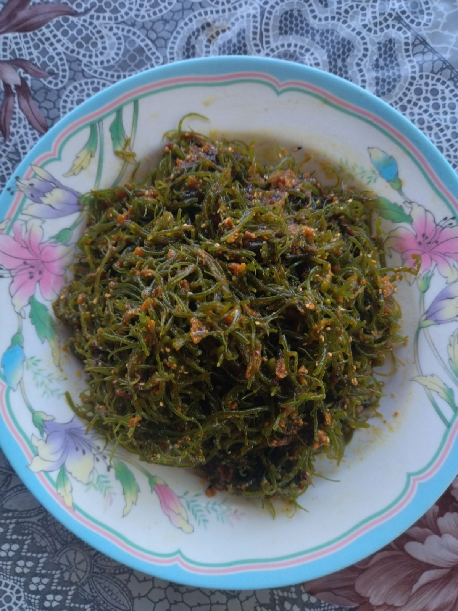

ကျောက်သံ
ကျောက်ကျော၊ကျောက်ချင်းလို့လဲခေါ်ပါတယ်။ပင်လယ်ထဲမှာရှိတဲ့ကျောက်တုံးများမှာကပ်ပြီးပေါက်တဲ့အပင်လေးတွေပါ။
ဆောင်းတွင်းပိုင်းမှာ လေတိုက်ကြမ်းရင် အဲ့လေနဲ့အတူ ကျောက်သံလေးတွေဟာ ကမ်းစပ်ကိုပါလာတတ်ပါတယ်။
ကမ်းစပ်မှာရေစစ်တဲ့အချိန်သောင်ပြင်ကြီးပေါ်ကနေရေစပ်မှာမြင်ရတဲ့ကျောက်ကျောကျောက်သံလေးတွေကို ကောက်ယူကြပါတယ်။ တချို့ကလေးတွေကအဲ့ကျောက်သံလေးတွေကိုကောက်ပြီးရွာထဲမှာပြန်လည်ရောင်းချပြီးမုန့်ဖိုးရှာကြပါတယ်။
ဘယ်လိုလုပ်စားလို့ရလဲ
ပြုတ်ပြီးတို့စားလို့ရသလို သုပ်စားလို့လဲရပါတယ်။
ရောနှောပါလာတတ်တဲ့ ကျောက်ခဲသေးသေးလေးတွေကိုတော့ဖယ်ဖို့လိုပါတယ်။
ပင်လယ်စာတစ်မျိုးဖြစ်သော်လဲ အစားများလို့ ဗိုက်နာဗိုက်အောင့်ခြင်းမရှိတတ်ပါ။
မွေးမြူရေးလုပ်လို့ရလား
ရပါတယ်။
သဘာဝကျောက်သံကိုပဲ ရေကန်ကြီးတွေထဲမှာ ရေငံထည့်ပီး စိုက်တဲ့သဘောပါပဲ။
ရေချိုထိ၍ လုံးဝမရပါဘူး။
အကယ်၍ ရေချိုထိမိပါက ပုပ်သွားတတ်ပါတယ်။
အပေါင်းအသင်းတွေနဲ့အတူသွားပြီး အလုအယက်ကောက်ရတာလဲပျော်စရာတစ်မျိုးပါ။
အခါအခွင့်သင့်ရင် လာရောက်ပြီး ကျောက်သံများကောက်ရသည့် အရသာကို ခံစားကြည့်ပါ။